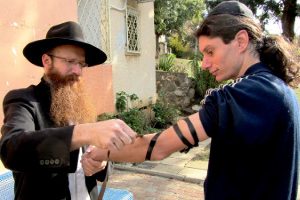

From a Guru in India to the Rebbe’s Shliach
He was an esteemed guru in India. He had many followers who hung on his every word. One day, he dropped it all. A series of divinely orchestrated events led him to Torah and Chassidus.

“All my life, since I can remember, I have searched for meaning and depth in life.” This is how R’ Noam Wolpin, shliach to Kibbutz Maayan Boruch and kibbutzim in the upper Galil, began his unique story. His life is full of twists and turns like a rickety boat tossed on the stormy seas for years until it reaches safe shores.
Noam was born and raised on Kibbutz Maayan Boruch in northern Israel.
“The kibbutz was radically Left. There were Arabs in our area and we were raised on tolerance, but when it came to our relationship with religious Jews, the attitude was completely different.”
Despite being drawn toward depth, he never considered Judaism as an option. Instead, he read books on psychology and philosophy and delved into the beliefs of various groups. When he finished his army service he went to India in order to study Buddhism. Noam’s personality quickly led him from being a student to becoming a guru in his own right. A large group of disciples clung to his every word.
Every now and then he would wander through India and set up shop in various towns and villages. His followers pursued him. Among them were many young Israelis along with gentiles from Europe and local Indians who called him “Enlightened One.” They believed he had special powers and that it was beneficial to live near him.
For nearly ten years, this is how he lived, wrapped in a robe and sporting the haircut typical of gurus. Except that then, even as so many sought to emulate him, his neshama woke up.
“It did not happen in an instant. One hashgacha pratis drew another and another until I realized that there is a Creator, someone who is directing it all. I realized that I was in the wrong place and decided to leave it all and return to Eretz Yisroel.”
FAR FROM TORAH
AND MITZVOS
Childhood on Kibbutz Maayan Boruch was wholly devoid of Jewish content.
“I celebrated my bar mitzva like I celebrated my twelfth birthday. Obviously, I did not put on t’fillin, I had no aliya, and I never heard Kiddush. Sad to say, on Pesach we ate pita and bread and on Yom Kippur nobody thought of fasting or going to shul.
“I remember that on Shabbos we kids would go to archaeological sites that abounded in the area of the kibbutz and we looked for all kinds of ancient artifacts that would, supposedly, bolster the theory of evolution.”
Until he was drafted, Noam did not meet any religious Jews.
“The area where the kibbutz is located is the most secular in the country. Many kibbutzim are located there and whoever we happened to meet was just like us. We only saw religious people on the news or in TV satires, where they were portrayed as primitive and old fashioned with their only interest being to squeeze money out of the government and throw rocks at policemen.”
Noam describes his childhood as “very good.” Along with his involvement in sports and being successful in that area, he would spend hours in the kibbutz library, reading books on psychology and Eastern religions. Of course there were no books about Judaism there. After each reading session, he would leave with a feeling of excitement, but this would slowly dissipate and the empty feeling would return.
When he reached draft age, he was attached to an intelligence unit, about which he is not allowed to speak. His search for meaning intensified during his army service and immediately following it he decided to throw himself into the study of law. He hoped that this would provide him with satisfaction and ease his inner hunger. He began his studies at Tel Hai College, but soon after he decided to take a break and travel abroad.
His first stop was South Africa where he entered the diamond trade.
“I felt for the first time in my life that there is a Creator. I felt that the education I was given on the kibbutz collided with the obvious reality that this world must be run by a power that is stronger than us. I found that when I project inner confidence and faith I am more successful than when I project skepticism and ambivalence. When I thought about this, I realized that there is a mysterious, inner force that runs things.
“I came to the conclusion that just like man consists of much more than what meets the eye, so too the entire universe has, in addition to what is visible to the eye, an invisible driving force. I did not have words for this and did not know how to say there is a Creator of the world; I could just say that in this world there are hidden forces that we do not understand, but they run everything in this world, plant life, animal and human life, and even the inanimate. This reality that I sensed contradicted the atheistic education I received on the kibbutz.”
ON THE ROAD TO INDIA
Equipped with this insight, Noam bought a one way ticket to India. He decided to focus on spirituality and went to ashrams and schools for meditation and Eastern religions where he assiduously studied their philosophies. He started out in Varanasi and after a brief stay, he continued to Rishikesh. From there he wandered among Indian villages in the Parvati Valley in northern India.
Within two years he switched from being a student to a teacher. His areas of expertise were yoga and meditation with song while chanting Indian mantras. He also became a Reiki teacher.
“Locals began to look at me and called me ‘Enlightened One,’ which meant to them that I had received leadership powers. It’s not that I sought to become a guru; it just happened. Within a short time a large group of Israelis and Europeans had formed around me.”
“Despite all the hoopla around me, I soon felt that it was all a game, nothing more. I felt it was all a lie and that I was promoting a way of life that I did not really believe in. Something within me sought much more than this, something deeper. People would tell me how their lives changed because of what they heard from me and what they experienced in the meditation workshops I gave. Inside I felt disdain in the face of this naiveté.”
Noam lived in India for seven years as a guru and did not enter a Chabad house even once.
“I had no background that would attract me to one of them,” he explains. “I felt that Judaism was the furthest thing from what I was seeking. Only once during that period did I encounter a shliach. It was when I was staying in Kasol and I met Danny Winderbaum. He noticed me and invited me to come in and complete a minyan in the Chabad house. Something about him appealed to me, but I reacted cynically to his suggestion and hurried away.”
Enthusiasm over the guru and his followers gained traction not only among the Israeli tourists but also among numerous non-Jews who began following Noam. They so admired him that they began copying his dress and habits and repeated deep lines that he said.
“A war began within me. On the one hand, everyone said I was enlightened and influencing their lives; on the other hand, I felt I was living a life far from what my soul sought. I was surrounded by admirers but inside I felt lacking, I felt this was not it, there was something greater.”
After four years, the incidents of divine providence that led him to seek another path began to crop up, one after the other. When Noam thinks about the time when it all began, he says nothing happened on its own; it was like a hidden hand was extended to him and took him, step by step, out of klipa and impurity toward k’dusha.
“There was a night of meditation in Dharamsala that was the most powerful event that the group experienced up to that date. Many people joined. We did not spend a cent on the event. It was all given to us for free and there was a spirit of great joy. When I walked in town the next day, a young Israeli greeted me and wished me ‘Chag Sameiach.’ I asked him what he was talking about and he said, ‘Don’t you know it’s the Chag of Mattan Torah today?’
“I did not know about Shavuos and what this Torah was that he spoke about, but even then I thought that the previous evening’s success could very well have been because of the holiday. That was the first time that I felt that Judaism has an influence on the world. Within a short time, something else happened that was even more significant. One of the group went to visit Eretz Yisroel and when he returned, he brought with him a CD of songs in Hebrew with some words from T’hillim. In the meditations that we did, we began including these songs instead of Indian mantras. Everyone felt that their connection to the spiritual side of things was far more powerful than when they chanted the Indian mantras.
“These songs became hits not only among members of the group but among all the groups that did meditation with song. I suppose that till today these songs are heard all over the world. For a period of time, the Indian mantras disappeared almost completely and at every gathering only those songs from T’hillim were sung. This got me thinking. Why was this happening? This led me to focus on the words and to learn a little about Dovid HaMelech. I began to understand that the Judaism I had been taught to hate was likely the truth that my soul yearned for. Words like ‘Hashem, open my lips so that my mouth will relate Your praises,’ or ‘As for me, may my prayer to You, Hashem, be in an auspicious time,’ moved me each time I heard them.”
Things began to move quickly from that point on, like in a domino effect. A short while later Noam met the woman who would become his wife. Although she came from an irreligious home, she had decided while still in Eretz Yisroel that she would light Shabbos candles every week.
“It is not something I can explain in words, but the candles moved me. I looked at them flickering and felt they infused me with peace. I felt that this was an elevated G-dly light. In the midst of a billion non-Jews, stood a Jewish woman who clung to her ancestors’ traditions and was proud of her Judaism. The feeling this gave me was greater than all of the best meditative experiences I had in my life.”
STUNNING REVERSE
These connections to Judaism made Noam want to leave everything and return home. Had he been asked a few months earlier whether he wanted to return, his answer would have been a resolute no. But something inside of him had changed following his first connections with tradition. Noam left India with his wife, to the surprise of his followers.
They settled in Yishuv Mitzpeh Amuka which is near the grave of R’ Yonasan ben Uziel.
“One day, I visited a kibbutznik acquaintance and he said to me, ‘Noam, someone left a pile of books with me. I don’t know what it contains. If you want, you can have it.’ There were Siddurim and Chumashim and I decided to take them. I put them in my study at home.
“Every morning I would get up at sunrise and meditate for hours. One morning, I felt compelled to take out a Siddur from the study and leaf through it. I opened it at random to the Igeres HaRambam where I read about the humility required of a Jew. This touched me. In the mystical world that I belonged to until that point, they speak very loftily about humility and lowliness, but what you actually encounter there is arrogance and a swollen ego. Here, the talk about humility is so well reasoned, coming from a place of simplicity. I thought that only someone who possessed the truth could write in this way.”
From then on, every morning, Noam would take the Siddur, open it and read. He did not know that there are prayers for certain days and certain times. Each morning he would read at whatever random page he opened to. Once it was Modeh Ani, another time it was Birkas HaMazon. The words of the Siddur moved him. He felt, for the first time in his life, that he was in contact with something true. He felt the powerful feeling of longing he had felt all his life begin to calm. At the same time though, he did not feel that he had actualized his full self; he sought to connect more and more. He was not satiated.
“I felt that all this was true, and yet, I still did not have the courage to drop my former life. Until one day.
“One night, we were sitting and discussing our lives and what is the most correct way to live. When I got up the next day, I told my wife that I was going to fast for three days. ‘What happened?’ she asked in a fright, thinking I had lost my mind. I told her that I had a dream in which I saw a Jew with a noble face who said to me that in order to be cleansed of the klipos in which I had been immersed, I needed to fast for three days.”
When Noam eventually became involved with Chassidus, he was astounded to discover that the person he had seen in his dream was the Rebbe.
DIVINE PROVIDENCE IN THE INDUSTRIAL AREA
“During the three day fast, an incident of divine providence occurred which catapulted me to the next stage on the path of Torah and mitzvos. On the first day, I went with my wife to a nature festival and in the morning we went for a walk in the area. During our stroll we saw a Jew wrapped in tallis and t’fillin and praying. This was the first time in my life that I was seeing someone wearing t’fillin and for some reason, I was very moved. When my wife noticed my excitement she suggested that I buy t’fillin and I immediately agreed.”
Pesach of that year was the first time in his life that he ate shmura matza. He got it from the shliach in Mitzpeh Amuka, R’ Meir Wilschansky.
“The decision to do t’shuva and stop sitting on the fence occurred toward the end of the time that we lived on the yishuv. I was made a business offer and I went to meditate in nature in order to decide what to do. When I went back to the house, my wife asked me what I had decided. I spontaneously said, ‘To do t’shuva.’ She smiled and said, ‘I made the same decision.’”
A short time later, the Wolpins moved to Rosh Pina. On Erev Shabbos Noam went out to find a shul. Some locals directed him to an ancient shul run by Chabad Chassidim and shluchim of the Rebbe, R’ Shlomo Berkowitz and R’ Sholom Dovber Hertzl.
“For the first time, I was exposed to people with a genuine sense of giving. It was the ‘final straw’ for me. I felt that this was precisely what my soul sought all along. It was a fantastic feeling of real inner joy like a lost son who seeks the father he never knew and finally finds him. The Chabad Chassidim in Rosh Pina were role models for me of authentic, humble Jews, men of mesirus nefesh suffused with Jewish pride.
“For the first time, I was exposed to a Chassidic family; Shabbos meals in which we were hosted by the shluchim were a welcome relief. In other places, people make demands but don’t keep to them themselves, while the shluchim we saw walked the talk. To see a father, mother and children sitting together and discussing divrei Torah and telling stories of the Rebbe is magical.”
Within a few months they decided to become Chassidim. They chose R’ Hertzl as their mashpia.
“At the very beginning, we asked R’ Hertzl to kasher our kitchen. Since most of the dishes were made of pottery or china, we had to throw it all away. After he finished the job, which took several hours, he took us to a housewares store, took out a check on which he wrote a large amount, and told us to restock our kitchen. At first my wife refused, but he was insistent. We were amazed by his offer.”
The Wolpins became an integral part of the community and became full-fledged Chassidim.
RETURNING
TO THE KIBBUTZ
The couple moved to Kiryat Malachi where they worked in the vocational school with “kids at risk.”
“At first, the work was very hard. I remember calling R’ Hertzl and telling him about it. He said, ‘What are you complaining about? You are not working with lofty Jewish souls; you are working with the loftiest Jewish souls.’
“Upon reflecting on this, I began to view my work as a shlichus challenge. Chassidus explains that the higher something is, the lower it falls, and that is what I kept in the forefront of my mind every day. This gave me the strength not to despair.
“Despite the challenges, we enjoyed a lot of success. There was a young man there who was in a very bad frame of mind. We discovered that he was artistic and he was given materials to work with. He chose to paint the Rebbe and produced incredible work. The most amazing thing was that the more he painted the Rebbe, the further he got out of his funk until he was completely well.”
After a stint in the field of education, the couple opened to a clear answer in the Igros Kodesh, which strengthened their resolve to go on shlichus with students at Tel Hai College. The final decision to go on shlichus in the area where Noam grew up was made on his birthday, 1 Sivan, when he read the HaYom Yom for that day: “‘Throw a stick into the air, it will fall back on its root-side (ikrei in Aramaic).’ Our fathers, the holy Rebbes, bequeathed a boundless heritage to the first Chassidim, that their sons’ children and their daughters’ children throughout the generations, in whatever country and environment they may be, will have that ‘ikrei’ – which is the attraction of their ‘innermost heart’ to the rock from which they were hewed out. At times this ‘ikrei’ is covered and concealed in a number of garbs. This, then, is the avoda of whoever desires life – to remove these coverings, to establish for himself periods for the study of Chassidus, and to conduct himself in the manner of the Chassidic community.’”
Noam and his wife were unsure whether this move would bring nachas to the Rebbe. After reading the HaYom Yom, they realized they were on the right track.
By marvelous divine providence, they were able to settle on the very same kibbutz where Noam grew up, Kibbutz Maayan Boruch, so that the shlichus was divided into two parts – with members of the kibbutz and with students at the nearby college.
“Many of the students have traveled a lot in the Far East, so we know how to speak their language and are quite familiar with the experiences they had. We know how to interact with them.”
“A few days after we came to live on the kibbutz, we celebrated Rosh HaShana and I went out to do Mivtza Shofar for the first time in the history of the kibbutz.
“There’s a man whom I knew when I was a kid, a famous writer, Amnon Shamosh. He won the Prime Minister’s prize three times, the Jerusalem prize, the Sholom Aleichem prize, the Golden Feather prize, and other prizes.
“He is far from Jewish practice but he happily welcomed me into his house to hear the shofar. When we finished the t’kios I saw that he was very moved. He told me that he remembered walking with his father to shul in Halab, Syria.”
FROM THE KLIPOS TO THE FRUIT
Lately, R’ Wolpin is busy with another shlichus. He has renewed contact with those Israelis who were with him in India and he is being mekarev them.
“We ran a Shabbaton for seekers. Many of them were shocked to meet me dressed as I am now, but they quickly recovered and some of them are already moving in the right direction.”
His good friend and right hand at that time in India was a dynamic young man, graduate of the Duvdevan – IDF Special Forces. Under Noam’s influence, he became a Chassid too, and today, his four children are in one of the Chabad schools in a city in the south of the country.
Lately, he has been collaborating with the Beis Chabad Kibbutzim, which works with kibbutzim all over the country, headed by R’ Yaakov Ben Ari. He is invited to speak and tells his life story.
“All the energy that I invested in klipos and impurity I now harness to draw lost souls toward Torah.”
As for how his parents and family reacted to his major life change:
“At first they were very frightened. They were sure that we would cut off contact with them, but with the guidance of our mashpia and the Rebbe, we strengthened our connection and became closer. When they saw that we were not distancing them, they not only remained on good terms and supported us but they too began to strengthen their mitzva observance. Our parents kashered their kitchens and this led them to strengthen other areas of mitzva observance. Who would have believed that such a thing would happen?!”
CONVERSATION ON FAITH
R’ Noam Wolpin relates:
Once I was invited to farbreng with some Lubavitcher bachurim and was asked to relate my life story. The boys enjoyed what I had to say and we got into a deep discussion about emuna.
One of the bachurim was really struggling with many questions. I found out that because of an argument with his parents, he decided to go off the derech. This farbrengen changed his mind. Meeting someone who “tasted whatever the world has to offer” and still chose to be a Chassid of the Rebbe, inspired him to t’shuva and strengthened him.
The long road I took, taught me that it is possible to change and improve, and this is what I try to teach.
Nosson Avrohom. "From a Guru in India to the Rebbe’s Shliach." Beis Moshiach, no. 919 (March 12, 2014).